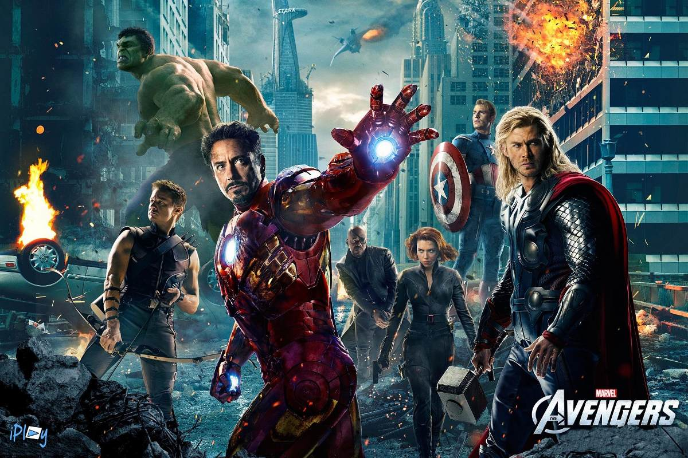

Top 10 maiores bilheterias do cinema da história
Nessa lista das maiores bilheterias do cinema da história, é considerada a receita pelos ingressos vendidos, principal métrica para publicações comerciais, que é usado para avaliar o tanto de sucesso de um filme.
Antigamente filmes de guerra, dramas históricos e musicais eram os gêneros que faziam maior sucesso. Mas a partir dos anos 2.000, as franquias passaram a fazer parte do gosto do público, como também as adaptações de super-heróis.
Esses gêneros fazem tanto sucesso que apenas três filmes que estão entre os dez primeiros,não fazem parte de franquias: Avatar, Titanic e O Rei Leão. Então confira a lista das 10 maiores bilheterias do cinema da história.
Maiores Bilheterias
10 Frozen 2 -- US$ 1,450 bilhão

Frozen 2 se passa três anos após os eventos do primeiro filme em uma jornada para descobrir a origem dos poderes de Elsa e salvar seu reino. Esse filme de animação musical foi orçado em 150 milhões de dólares, distribuído pela Walt Disney com estreia em novembro de 2019, e até agora alcançou a bilheteria de mais de US$ 1,450 bilhão. Também foi o filme animado que teve a maior arrecadação na estreia.
9 Velozes e Furiosos 7 -- US$ 1,516 bilhão

Velozes e Furiosos 7 é um filme de ação americano lançado em 2015 e teve um orçamento de 190 milhões de dólares. Contou com a última participação de Paul Walker, com metade de suas cenas filmadas, tendo que ser substituído por seus irmãos e com o rosto feito em computação gráfica. A bilheteria alcançou 1 516 045 911 de dólares.
8 Os Vingadores -- US$ 1,518 bilhão
O sexto das maiores bilheterias da história é Os Vingadores. É um filme dos Estados Unidos de ação de super heróis da Marvel lançado em 2012 com um orçamento de 220 milhões de dólares. A bilheteria do filme chegou a alcançar 1.518.812.988 de dólares
7 O Rei Leão -- US$ 1,656 bilhão
A animação computadorizada O Rei Leão teve uma despesa de 60 milhões de dólares e rapidamente alcançou as primeiras posições das maiores bilheterias do cinema mundial. Foi lançado em 9 de julho de 2019 primeiramente em Hollywood e depois de dez dias no restante dos Estados Unidos, sendo que internacionalmente foi em 12 de julho na China. A bilheteria total alcançada foi de 1.656.943.394 bilhão de dólares. Esse filme também se tornou a animação de maior bilheteria, o musical de maior bilheteria, o remake mais lucrativo da história, e o maior sucesso nas bilheterias para o Walt Disney Pictures.
6 Jurassic World -- US$ 1,671 bilhão
Jurassic World : O Mundo dos Dinossauros é um filme americano de ficção científica, ação e aventura e foi lançado em 2015 com um orçamento de 150 milhões de dólares. É o quarto filme da franquia Jurassic Park e sua bilheteria alcançou 1.671.713.208 de dólares.
5 Vingadores: Guerra Infinita -- US$ 2,048 bilhões
Vingadores: Guerra Infinita é a continuação dos filmes americanos da Marvel Os Vingadores lançados em 2012 e 2015. Foi lançado em abril de 2018 sendo anunciado em 2014 e teve um orçamento na faixa de 400 milhões de dólares. É o décimo nono filme da Universo Cinematográfico da Marvel e sua bilheteria alcançou até agora 2.048.359.754 de dólares.
4 Star Wars: O Despertar da Força -- US$ 2,068 bilhões

Star Wars: O Despertar da Força é um filme americano de aventura, fantasia e ficção científica que foi orçado em 200 milhões de dólares. Foi o filme mais rápido da história a chegar a 1 bilhão de dólares nas bilheterias, tendo alcançado a marca de 2.068.223.624 de dólares.
3 Titanic -- US$ 2,187 bilhões
Titanic é um filme dos Estados Unidos de romance e drama do náufrago real do RMS Titanic ocorrido em 1912. O filme foi lançado em 1997 e com os seus 200 milhões de orçamento, sendo o longa-metragem mais caro já produzido na época, foi o primeiro a arrecadar mais de 1 bilhão de dólares e permaneceu o primeiro das maiores bilheterias de cinema da história por 12 anos. A bilheteria do Titanic alcançou a marca de 2.187.463.944 de dólares.
2 Avatar -- US$ 2,789 bilhões
O segundo lugar das 10 maiores bilheterias de cinema da história pertence a Avatar. Um filme norte-americano de ação, aventura e ficção científica desenvolvido desde 1994 e lançado em 2009, sendo orçado em 237 milhões de dólares. Avatar foi o primeiro filme a alcançar 2 bilhões de dólares em faturamento das maiores bilheterias de cinema da história e depois dessa marca o escritor e diretor de Avatar, prometeu lançar mais dois filmes, formando uma trilogia. A bilheteria do filme alcançou 2.789.679.794 de dólares.
1 Vingadores: Ultimato -- US$ 2,796 bilhões

Vingadores: Ultimato é um filme americano de super-herói e foi lançado em 2019 com um orçamento de 356 milhões de dólares. É o quarto filme da franquia Vingadores e sua bilheteria alcançou o total de 2.796.274.401 bilhões de dólares. Esse filme que é o último da Saga Infinity, foi amplamente divulgado, com extensas campanhas de marketing e já quebrou vários recordes de bilheteria, incluindo o principal, que foi ter se tornado a maior bilheteria do cinema mundial.